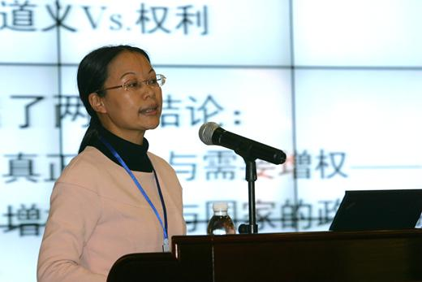
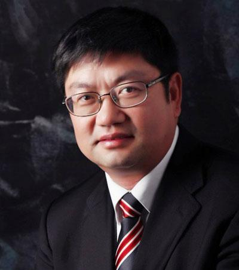

当前位置：
首页 >
学术研究 > 旅游学院教师左冰、保继刚获得2013《旅游学刊》最有影响力论文大奖
旅游学院教师左冰、保继刚获得2013《旅游学刊》最有影响力论文大奖
资料来源 《中国社会科学报》、旅游学刊、中大新闻网

左冰

保继刚
10月19—20日， 2013《旅游学刊》中国旅游研究年会在重庆举行。本次年会由北京联合大学主办，北京联合大学旅游学院、《旅游学刊》编辑部等单位共同承办。本次主题是“中国旅游研究：前沿·理性·责任”。来自中、英、澳、美等国家和地区的约300名与会者，在会上围绕旅游研究前沿问题、最新成果、中国旅游及旅游研究的未来路径等展开热烈讨论，评选出了“《旅游学刊》2012年度最有影响力论文”。
我校旅游学院教师彭青、徐红罡、张朝枝、孙九霞、曾国军、左冰、刘冰带领部分研究生参加了会议。
10月19日下午，左冰、保继刚教师发表在《旅游学刊》2012年第2期的论文《制度增权：社区参与旅游发展之土地权利变革》经过学术委员会前期投票、会前讨论、现场报告、现场评议，获得参与投票和评议的大多数学术委员的推荐，荣获“《旅游学刊》2012年度最有影响力论文”大奖，奖金10万元。
《旅游学刊》学术委员会认为，左冰、保继刚二位教师从马克思的地租理论出发，探讨当今中国旅游发展中社区参与所涉及的土地权利问题，不仅为其立论建立了牢靠的政治经济学基础，彰显了其认同社会冲突范式的科学内涵，同时也显示了作者对中国社会旅游发展过程中的弱势群体的独特关注，作者的努力，对于解释中国现阶段乡村旅游、遗产旅游、文化旅游等资源依托型旅游产品开发和利用当中所暴露出来的日益尖锐的矛盾，是一种极富启发性的探讨。作为这一科学研究的当然结论，作者还提出了“吸引物权”这一核心概念，这一努力所昭示的理论和实践意义，都是不可小觑的。正是在这个意义上，该文获得了学界同仁的认同，同时也值得向相关的产业和政府部门予以推介。